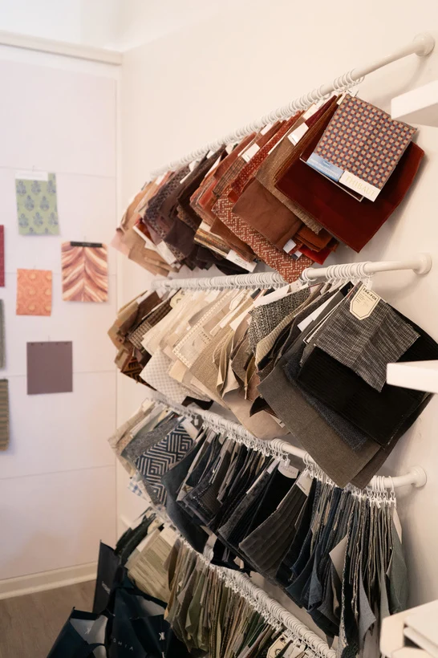

01 / INTERIORS · ONGOING MARKETING
Kline Interiors
Bringing the design process into the story. Content and marketing support that connects the studio’s expertise, materials, and finished spaces.
My role & project details
Content planning, on-site photo and video capture, reel editing, newsletter and blog support, and performance analysis.
For the studio’s name change, my work included a teaser, the motion graphic reveal, and content documenting the installation of the new studio sign.
I use reach, watch time, engagement, and website actions to inform the next round of content.